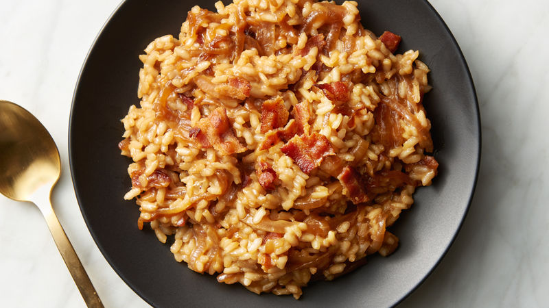

Risotto

Not one for risotto purists – this simple recipe has just a few ingredients and the stock
is added all in one go. The result is creamy, comforting yet healthy
Ingredients:
- 1 onion
- 2 tbsp olive oil
- knob of butter
- 6 rashers streaky bacon, chopped
- 300g risotto rice
- 1l hot vegetable stock
- 100g frozen peas
- freshly grated parmesan, to serve
Method:
- Finely chop 1 onion. Heat 2 tbsp olive oil and a knob of butter in a pan, add the onions and fry until lightly browned (about 7 minutes).
- Add 6 chopped rashers streaky bacon and fry for a further 5 minutes, until it starts to crisp.
- Add 300g risotto rice and 1l hot vegetable stock, and bring to the boil. Stir well, then reduce the heat and cook, covered, for 15-20 minutes until the rice is almost tender.
- Stir in 100g frozen peas, add a little salt and pepper and cook for a further 3 minutes, until the peas are cooked.
- Serve sprinkled with freshly grated parmesan and freshly ground black pepper.